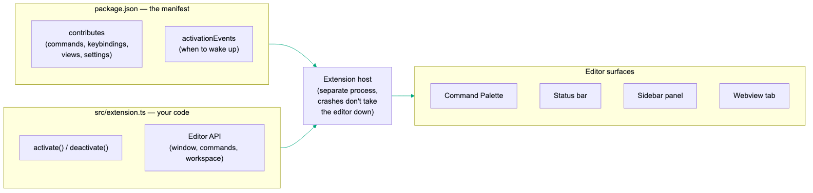
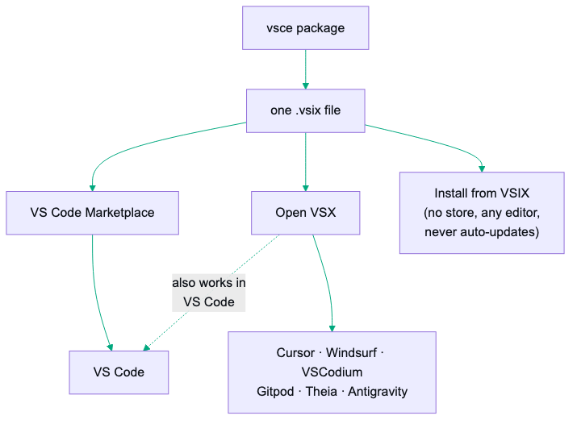

Deck 11 · IDE extensions / dev tooling
Build your own IDE extension. Idea to publish.
The real-world path from "my editor should do that" to a published extension — what extensions actually are, the five VS Code surfaces that cover almost every idea, the gotchas the tutorials don't warn you about, the Azure publishing detour nobody mentions, and an honest field guide to Zed, JetBrains, and Neovim.
Weekend-scale
One .vsix → two stores
VS Code + Cursor + Windsurf + VSCodium
Real gotchas, paid in afternoons
02 · the itch
Every developer has one.
That small thing your editor almost does. You've tolerated it for months. Maybe years.
- The command you retype ten times a day — the same 3–4 steps, every day, by hand.
- The info you keep switching to a browser to check — build status, ticket numbers, server health.
- The tool you love that lives in a terminal while your actual work lives three windows away.
The claimYou can fix that yourself — in a weekend, without being an expert. An extension isn't a mystical artifact maintained by people smarter than you. It's a small program plus a form that tells the editor where to plug in. If you can write a script, you can write an extension.
The case this deck followsA CLI tool with a local web UI for PR review. The UI was fine — but using it meant a terminal, a command, a browser tab, a context switch. The fix: a VS Code extension that starts the server, shows the numbers in the sidebar, and embeds the whole UI in an editor tab.
03 · the mental model
Strip the branding — every extension system answers three questions.
1 · Where does it plug in?A manifest — a small config file where you declare: I add a command, a keyboard shortcut, a sidebar panel, a setting.
2 · When does it wake up?Editors don't run your code constantly. It loads when something you declared happens: your command runs, a file type opens, startup finishes.
3 · What can it touch?An API the editor hands your code — and a sandbox deciding how far your code can reach.
For the non-developersThink browser extensions, but for the program people write code in. The editor is a phone, extensions are apps, the marketplace is the app store. Same shape, different device — and just like phone apps, most extensions are tiny: one command, one panel, one quality-of-life fix.
04 · anatomy
VS Code in one diagram — two files do almost everything.

The whole mental model — manifest + one source file → extension host → editor surfaces. Click to zoom.
package.json — the manifest. A form your extension fills out: command, shortcut, settings users can tweak.src/extension.ts — your code. One function runs on activation, one on shutdown. Everything else is calling editor APIs.
Why it's safe to experimentYour code runs in a separate process the editor babysits — the extension host. If your extension crashes, the editor doesn't. You cannot brick your setup. Worst case, you disable it. The barrier to trying is much lower than it looks.
05 · taxonomy
Extensions come in nine shapes. Know them, place your idea.
| Shape | What it does | You've met it as |
|---|
| Command / tool | Adds a button that does a thing | The shape this deck builds |
| Syntax highlighter | Colorizes a language the editor doesn't know | Grammars for niche languages |
| Theme | Restyles the whole editor | One Dark Pro + ten thousand cousins |
| Snippet pack | Three letters expand into thirty lines | rafce → a full React component |
| Formatter | Rewrites code to one style on save | Prettier, Black |
| Linter | The squiggles while you type | ESLint |
| Language server | Real intelligence — autocomplete, go-to-def, hover docs | rust-analyzer, Pyright |
| Debugger | Breakpoints and stepping inside the editor | Debug adapters |
| Bridge | A doorway to a tool that lives outside the editor | Docker, Remote SSH, GitLens |
The shortcutThemes and snippet packs are just JSON. No code, no API, no extension host — a palette or a pile of templates in a manifest. Plenty of people earn "published extension author" without writing a line of TypeScript. That's an honest way in.
06 · before you write code
Most failed extensions die here — not in the code.
Two minutes of honesty saves a weekend.
✓ Probably good
A repeated action — same 3–4 steps daily. A command + a keybinding turns it into one keypress.
Glanceable information — whatever you'd open a browser tab to check, made ambient in a status bar or sidebar row.
A bridge — a tool you love living outside the editor. The extension doesn't replace it; it hands you a doorway.
✗ Probably bad
Settings or keybindings already do it. Embarrassing numbers of "extensions" re-implement built-in config. Search settings first.
An existing extension already does it. Search the marketplace twice — once for what it's called, once for what it does.
It's a whole app. Needs its own navigation, accounts, a database? It should be a web app with an extension as a thin doorway.
07 · the thin-client principle
Embed, don't rebuild.
- The obvious-looking path for the review-UI extension: rebuild the UI natively inside VS Code — native diffs, native comment threads. The APIs exist. Said no. Would repeat that decision every time.
- The extension embeds the existing web UI in an editor tab; every sidebar row deep-links to the exact section of it. One UI, two viewports.
- Re-implement instead, and you're maintaining two frontends forever — target a second editor, and it's four.
The mathThe extension's actual jobs are the cheap ones: start the thing, show the numbers, open the right place. That's a weekend. A native re-implementation is a quarter.
08 · VS Code path · setup
The fifteen-minute skeleton.
# Node.js installed, empty folder:
npx --package yo --package generator-code -- yo code
- The official scaffolder — name, identifier, TypeScript (say yes) — hands you a working extension with a sample command.
- Open the folder, press F5. A second window appears — the Extension Development Host — with your extension loaded.
- Ctrl+Shift+P → type your command's name → run it. A notification pops. That's the whole loop.
You'll live in this loopEdit → F5 → test in the host window → Developer: Reload Window. No emulator downloads, no signing certs, no device registration — compare that to any other platform you've developed for.
09 · VS Code path · package.json
Half the work is filling in a form.
You don't code a palette entry or a shortcut — you declare them, and the editor builds them for you.
{
"name": "deploy-buddy", "publisher": "yourname",
"engines": { "vscode": "^1.85.0" },
"contributes": {
"commands": [
{ "command": "deploybuddy.deploy", "title": "Deploy current branch" }
],
"keybindings": [
{ "command": "deploybuddy.deploy", "key": "ctrl+alt+d", "when": "editorTextFocus" }
],
"configuration": {
"properties": {
"deploybuddy.environmentUrl": { "type": "string", "default": "https://staging.example.com" }
}
}
}
}
- That JSON = a palette entry, a shortcut that fires only when the editor has focus, and a settings screen — generated from the configuration block, free.
engines.vscode must match the editor you test in. Mismatch = the #1 reason a fresh command simply doesn't appear. Command missing? Check this first.- Modern VS Code infers activation from contributions — an empty
activationEvents array is normal for command-driven extensions.
10 · VS Code path · extension.ts
Your first command — the whole code side.
import * as vscode from "vscode";
export function activate(context: vscode.ExtensionContext) {
const disposable = vscode.commands.registerCommand(
"deploybuddy.deploy",
async () => {
const editor = vscode.window.activeTextEditor;
if (!editor) return vscode.window.showErrorMessage("Open a file first");
const branch = await vscode.commands.executeCommand("git.currentBranch");
vscode.window.showInformationMessage(`Deploying ${branch}…`);
// your actual work here
},
);
context.subscriptions.push(disposable);
}
export function deactivate() {}
- Notice what it isn't: no framework, no build orchestration, no lifecycle diagram. The editor calls
activate, you register things, done.
subscriptions.push is just "clean this up when I'm unloaded" — copy the pattern and move on.
11 · VS Code path · the API
The API is huge. You'll use five surfaces.
| Surface | What it is | Use it for |
|---|
| Command Palette | Ctrl+Shift+P entries | Anything the user does occasionally |
| Quick Pick | showQuickPick() — the fuzzy dropdown | Picking one thing: environments, branches, tickets |
| Status bar | createStatusBarItem() — bottom-bar text | One number, always visible: build status, server health |
| Sidebar panel | createTreeView() — activity-bar tree | Structured info: multiple items, live counts |
| Webview | createWebviewPanel() — a browser tab inside the editor | Anything visual: dashboards, embedding a web UI |
If you wrap a local web toolThe webview is the finish line: point an iframe at http://localhost:PORT — Chromium treats localhost as trustworthy, so http doesn't trip security rules — and your entire UI now lives in an editor tab. Reuse one panel and repoint its src on navigation, instead of spawning a tab per click. Embed, don't rebuild — slide 07 in code.
12 · gotchas · rendering
Lessons that cost an afternoon each — rendering.
- Status bar icons are codicons only.
StatusBarItem has no iconPath — the API simply can't take your custom SVG. Built-in codicon font ($(rocket), $(sync)) or text.
- Custom SVGs go elsewhere — with different rules per surface. The activity bar alpha-masks your SVG and repaints it in the theme color (draw with
currentColor and punched holes); editor-tab icons want a {light, dark} pair because the background flips with the theme.
- Some manifest changes need a full restart, not a reload. Icons, view containers, menus are read only when the extension host starts.
Reload Window picks up your code; a stubborn new icon needs quit-and-relaunch.
- Webviews flash the wrong theme on first paint. The editor's theme reaches the iframe only after a message round trip — a fresh load briefly falls back to the OS theme. Pass it in the URL (
?theme=dark) and apply with an inline script before your stylesheets load.
13 · gotchas · the webview sandbox
The webview is a locked-down browser — and it fails silently.
window.open() and target="_blank" do nothing. No error, no console spam, just silence. Your webview code must postMessage the URL to the extension, which routes: same-server link → a new webview tab; external → vscode.env.openExternal().- Set
retainContextWhenHidden: true when creating the panel — or the webview's state resets every time the user switches tabs. There's a memory cost; for a dashboard it's worth it.
- Keystrokes land in the iframe, where the editor's keybindings can't see them. Your embedded app must forward the workbench escapes (
Ctrl+Shift+P, Ctrl+P, sidebar toggles) over postMessage — and the extension replays a short whitelist, nothing more.
14 · gotchas · processes & drift
The classics: zombies, Windows, and drift.
- Windows spawns need a shell. Works on your Mac, dies for Windows users: npm-installed CLIs are
.cmd shim files that can't be spawned directly. Pass shell: true. The "works on my machine" bug of extension development — Windows users will find it for you.
- Adopt, don't duplicate, long-running processes. If your extension starts a server, check whether one is already running for this workspace first, and attach. Otherwise every window reload spawns another copy, ports fight, users get zombies. Read the CLI's registry file — healthy match means adopt, otherwise spawn. Ten lines, entire class of bugs gone.
- One source of truth for repeated lists. The same menu in a sidebar panel and a quick pick, hand-maintained separately — they drifted: missing rows, a copy-pasted wrong icon. The fix was boring and permanent: both surfaces render from one array in one file. Any list that appears twice in your UI will drift.
15 · testing
F5 is for your eyes. Test in the real editor.
npm install --save-dev @vscode/test-electron
# package.json: "test": "node out/test/runTest.js" — the scaffold has this
- The runner downloads an actual VS Code binary and runs your tests inside the real extension host — not a mock, the actual editor, headless.
- Headless means it also runs in CI on all three operating systems. If you ship to strangers: a test asserting your commands are registered and your endpoints answer catches the entire "extension loaded but nothing works" class of bug reports.
- One quirk before it bites: the test host rejects a module that merely runs itself — it must export a
run() function.
- Keep a small manual checklist for what automation can't see — icons rendering, panels looking right, shortcuts firing. Two lists, both short.
16 · shipping · the file
Start with just a file — the .vsix.
npm install -g @vscode/vsce
vsce package # → your-extension-1.0.0.vsix
code --install-extension your-extension-1.0.0.vsix
- A
.vsix is a zip with your code and manifest — installable directly via the Extensions panel's ⋯ menu → Install from VSIX…, or the CLI above.
- A
.vscodeignore file keeps junk out of the package — ship only your dist/ bundle, manifest, README, license.
- Manually installed
.vsix files never auto-update — installing the next version's file over it just works.
Do not skip past thisA .vsix file is a completely legitimate end state. Team tooling, an internal extension that will never be public, a personal scratch extension — package it, drop it in a shared drive or a GitHub release, done. Software that serves one team well is not a failure.
17 · shipping · the main store
Publishing is one command — behind two accounts.
- Create a publisher on the Visual Studio Marketplace — an ID that permanently identifies you and your extensions.
- Create a PAT on Azure DevOps. Yes, Azure — the Marketplace's auth lives there. Token scoped to All accessible organizations + Marketplace → Manage — anything else gets you a bare 403 that doesn't tell you why.
- The absurd part: creating an Azure DevOps org can require linking an Azure subscription — and even a free-tier Azure account wants a card for identity verification. To publish a free extension. The single most common place publishing stalls out.
Calendar noteGlobal PATs retire December 1, 2026 — the going-forward path is Entra ID auth (workload identity federation in CI, vsce publish --azure-credential). Setting up fresh? Do it the new way from day one and skip the token-renewal treadmill.
| Marketplace rule | What it means for you |
|---|
| Versions strictly increase | Published a broken version? You can't overwrite it — fix it by shipping the next version |
| The listing is a snapshot | README, icon, description update only when you publish. No "refresh listing" button |
| No SVGs in listings | Icon, badges, README images — raster only, https URLs |
| Removal is forever | Unpublishing removes it from every user; names stay reserved. Prefer leaving an old version up |
18 · shipping · the second store
One extra step — five more editors.
Marketplace terms allow Microsoft builds of VS Code only. Cursor, Windsurf, VSCodium, Gitpod, Theia — all built on VS Code's open-source core, all banned from the main store. They share a second store: Open VSX. And it takes the same .vsix you already built.

The solo-developer distribution strategy — build one .vsix, publish it twice. Click to zoom.
- The Eclipse saga, so you don't hit it blind: sign in with GitHub → not enough. You need an Eclipse Foundation account (separate registration), sign the publisher agreement, and link your GitHub inside your Eclipse profile. Skip the link → a bare redirect that looks like an OAuth bug; the real reason lives in a background request (
eclipse-missing-github-id) the page never shows.
- Then: namespace matching your publisher ID exactly, generate a token,
npx ovsx publish. Every editor from stock VS Code to Cursor can now install your work.
19 · beyond VS Code
The rest of the editor world — the honest state.
| VS Code family | Zed | JetBrains | Neovim |
|---|
| Language | TypeScript / JS | Rust → WASM | Kotlin / Java | Lua |
|---|
| Custom UI | Webviews, panels, status bar | None yet (open RFC) | Full IDE-grade UI | Full TUI |
|---|
| Distribution | Marketplace + Open VSX | PR to central repo | JetBrains Marketplace | Git repos |
|---|
| First result | An evening | An evening (non-UI) | A weekend or two | An evening |
|---|
| Reach | Every VS Code-based editor | Zed users | All JetBrains IDEs | Neovim users |
|---|
- Zed: sandboxed Rust→WASM extensions — languages, themes, snippets, debug adapters, MCP context servers — but no UI of your own (sidebars, panels, status items: none). The route that works today:
tasks.json runs your CLI on a keystroke and the terminal renders localhost URLs clickable; an MCP server covers the smart integrations. Sometimes the right extension is a config file.
- JetBrains: the inverse trade — first-class plugins that can rebuild any part of the IDE, in exchange for a JVM desktop-application framework (Gradle, the debugger, the build times). Last stop on the tour, not the first.
- Neovim: your config is the extension system. Lua modules, no manifest, no store, no review — total freedom, zero hand-holding. A personal plugin can be an evening; distribution is entirely your problem.
20 · the decision
Which one first? Reach per effort.
- Default: VS Code, then Open VSX. One TypeScript codebase, two publish commands — stock VS Code plus Cursor, Windsurf, VSCodium. The largest developer audience on earth for extension work. Nothing else comes close.
- Team lives in JetBrains IDEs and the idea needs to live inside the editor → go Kotlin and budget the learning curve. It's the only sanctioned way in.
- Your tool's real home is a web UI → build the thinnest VS Code bridge (embed + deep links), and for Zed don't build at all — tasks plus clickable URLs cover it today.
- It's just for you → build for whatever you actually use, ship it as a
.vsix or a config file, skip the stores entirely.
Start absurdly smallOne command that does one thing you actually do daily. Ship that, use it for a week, let the extension tell you what it wants to become next — the review extension started as "start the server without typing a command"; the sidebar counts, the embedded tab, the quick picks were all pull, added because daily use kept asking. Never seen one ruined by starting too small. The big-bang ones — plenty.
21 · the path from here
The gap is shorter than it looks.
- Today: npx --package yo --package generator-code -- yo code, press F5, change the sample command's message to something that makes you smile. You're now an extension developer.
- This week: pick the one repetitive thing you actually do daily — make a command for it, add a keybinding in the manifest.
- When it's useful: vsce package and install the .vsix properly — you'll feel the difference the first time it's just there after a restart.
- If the world needs it: publish — Marketplace for VS Code, Open VSX for everything VS Code-shaped. The Azure detour is a rite of passage, not a sign you're doing it wrong.
The most useful software you'll ever write might be the kind only you needed. There's exactly one way to find out.